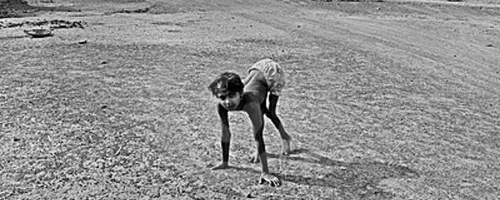

Informações sobre todos os tipos de paralisias.

A transmissão do poliovírus “selvagem” pode se dar de pessoa a pessoa através de contato fecal - oral, o que é crítico em situações onde as condições sanitárias e de higiene são inadequadas. Crianças de baixa idade, ainda sem hábitos de higiene desenvolvidos, estão particularmente sob risco. O poliovírus também pode ser disseminado por contaminação fecal de água e alimentos.
Todos os doentes, assimptomáticos ou simptomáticos, expulsam grande quantidade de virus infecciosos nas fezes, até cerca de três semanas depois da infecção do individuo.
Os seres humanos são os únicos atingidos e os únicos reservatórios, daí a vacinação universal poder erradicar essa doença completamente.
O período entre a infecção com o poliovírus e o início dos sintomas (incubação) varia de 3 a 35 dias. A descrição seguinte refere-se à poliomielite maior, paralítica, mas esta corresponde a uma minoria dos casos. Na maioria o sistema imunitário destroi o virus em alguma fase antes da paralisia (ver mais à frente).
A infecção é oral e há invasão e multiplicação do tecido linfático da faringe (tônsilas ou amígdalas). Ele é daí ingerido e sobrevive ao suco gástrico, invadindo os enterócitos do intestino a partir do lúmen e aí multiplicando-se.As manifestações iniciais são parecidas com as de outras doenças virais. Podem ser semelhantes às infecções respiratórias (febre e dor de garganta, gripe) ou gastrointestinais (náuseas, vômitos, dor abdominal. Em seguida dissemina-se pela corrente sangüínea e vai infectar por essa via os orgãos. Os mais atingidos são o sistema nervoso incluindo cérebro, e o coração e o fígado. A multiplicação nas células do sistema nervoso (encefalite) pode ocasionar a destruição de neurônios motores, o que resulta em paralisia flácida dos músculos por eles inervados.
As manifestações clínicas da infecção são variadas e podem ser descritas em quatro grupos:
Mais de 90% dos casos são assimptomáticos, com limitação efectiva pelo sistema imunitário da infecção à faringe e intestino. Não há sintomas e a resolução é rápida sem quaisquer complicações.
Ocorre em 5% dos casos, com febre, dores de cabeça, dores de garganta, mal estar e vómitos, mas sem complicações sérias.
Ocorre em 1 ou 2% dos casos. além dos sintomas iniciais da doença menor, ocorre inflamação das meninges do cérebro com dores de cabela fortes e espasmos musculares mas sem danos significativos neuronais.
De 0,1 a 2% dos casos. Após os três ou quatro dias depois dos sintomas iniciais da doença menor desaparecerem (ou cerca de 10 dias depois de se iniciarem), surge a paralisia devido a danos nos neurónios da medula espinal e córtex motor do cérebro. A paralisia flácida (porque os membros afectados são maléaveis ao contrário da rigidez que ocorre noutras doenças) afecta um ou mais membros, e músculos faciais. O número de músculos afectados varia de doente para doente e tanto pode afectar apenas um grupo discreto como produzir paralisia de todos os músculos do corpo. Se afectar os músculos associados ao sistema respiratório ou o centro neuronal medular que controla a respiração subconsciente directamente, a morte é provável por asfixia. A paralisia respiratória é devida à poliomielite bulbar, que afecta esses nervos: ataxa de mortalidade da variedade bulbar é 75%. As regiões corporais paralisadas conservam a sensibilidade. Se o doente sobreviver alguns poderão recuperar alguma mobilidade nos músculos afectados, mas frequentemente a paralisia é irreversivel. A mortalidade total de vítimas da poliomielite paralítica é de 15 a 30% para os adultos e 2 a 5% para crianças.
O síndrome pós-poliomielite atinge cerca de metade das vítimas de poliomielite muitos anos depois da recuperação (por vezes mais de 40 anos depois). Caracteriza-se pela atrofia de músculos, presumivelmente pela destruição no tempo da doença de muitos neurónios que os inervavam. Com a perda de actividade muscular da velhice a atrofia normal para a idade processa-se a taxas muito mais aceleradas devido a esse facto.
Qualquer dúvida que tenha, deixe um comentário.